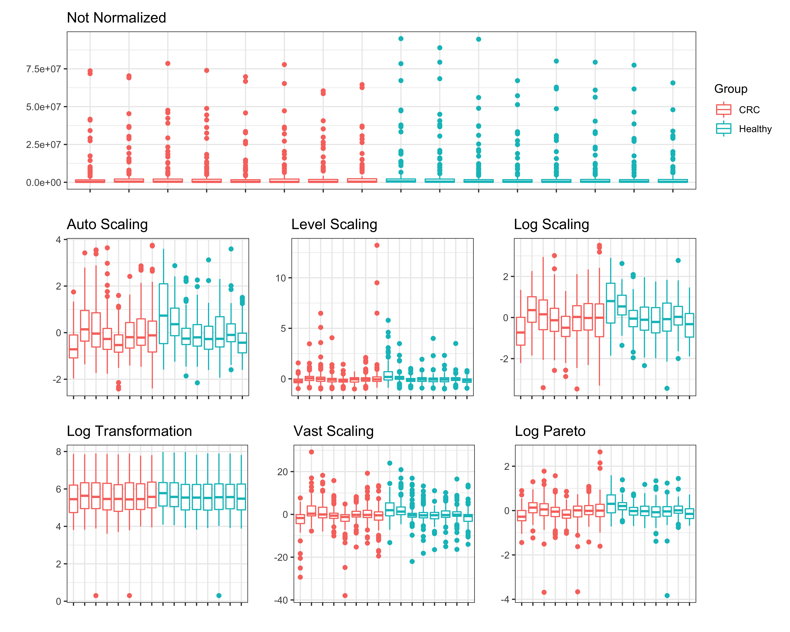
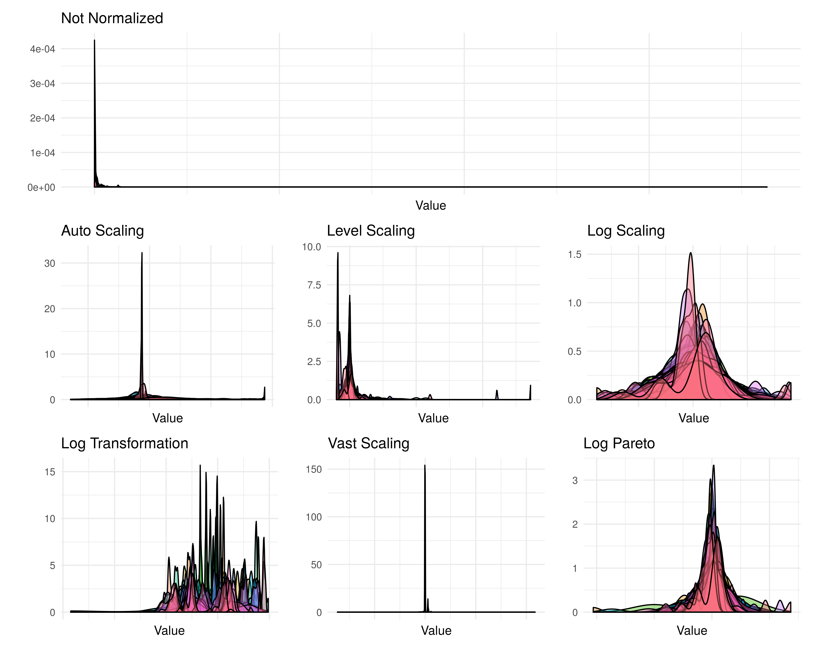

vignettes/POMA-normalization.Rmd
POMA-normalization.RmdLet’s create a smaller MSnSet object to better explore normalization effects.
# load example data data("st000284") # subset example data my_features <- t(exprs(st000284))[c(1:8, 120:127) ,] my_target <- pData(st000284)[c(1:8, 120:127) ,] my_target <- my_target %>% rownames_to_column("ID") # create a smaller MSnSet object from example data example_data <- PomaMSnSetClass(features = my_features, target = my_target) example_data ## MSnSet (storageMode: lockedEnvironment) ## assayData: 113 features, 16 samples ## element names: exprs ## protocolData: none ## phenoData ## sampleNames: sample_109 sample_11 ... sample_56 (16 total) ## varLabels: factors age_at_consent ... alcohol_consumption (5 total) ## varMetadata: labelDescription ## featureData: none ## experimentData: use 'experimentData(object)' ## Annotation: ## - - - Processing information - - - ## MSnbase version: 2.12.0
POMA
We can skip the imputation step because example data doesn’t has missing values.
Here we will evaluate ALL normalization methods that POMA offers on the same MSnSet object to compare them.
none <- PomaNorm(example_data, method = "none", round = 3) auto_scaling <- PomaNorm(example_data, method = "auto_scaling", round = 3) level_scaling <- PomaNorm(example_data, method = "level_scaling", round = 3) log_scaling <- PomaNorm(example_data, method = "log_scaling", round = 3) log_transformation <- PomaNorm(example_data, method = "log_transformation", round = 3) vast_scaling <- PomaNorm(example_data, method = "vast_scaling", round = 3) log_pareto <- PomaNorm(example_data, method = "log_pareto", round = 3)
When we check for the dimension of the data after normalization we can see that ALL methods have the same effect on data dimension. PomaNorm only change the data dimension when the data has features that only have zeros and when the data has features with 0 variance. Only in these two cases PomaNorm will remove features of the data, changing the data dimensions.
dim(Biobase::exprs(none)) ## [1] 113 16 dim(Biobase::exprs(auto_scaling)) ## [1] 113 16 dim(Biobase::exprs(level_scaling)) ## [1] 113 16 dim(Biobase::exprs(log_scaling)) ## [1] 113 16 dim(Biobase::exprs(log_transformation)) ## [1] 113 16 dim(Biobase::exprs(vast_scaling)) ## [1] 113 16 dim(Biobase::exprs(log_pareto)) ## [1] 113 16
p1 <- PomaBoxplots(none, group = "samples", jitter = FALSE) + ggtitle("Not Normalized") + ylab("") + theme(axis.text.x = element_blank()) p2 <- PomaBoxplots(auto_scaling, group = "samples", jitter = FALSE) + ggtitle("Auto Scaling") + ylab("") + theme(legend.position = "none", axis.text.x = element_blank()) p3 <- PomaBoxplots(level_scaling, group = "samples", jitter = FALSE) + ggtitle("Level Scaling") + ylab("") + theme(legend.position = "none", axis.text.x = element_blank()) p4 <- PomaBoxplots(log_scaling, group = "samples", jitter = FALSE) + ggtitle("Log Scaling") + ylab("") + theme(legend.position = "none", axis.text.x = element_blank()) p5 <- PomaBoxplots(log_transformation, group = "samples", jitter = FALSE) + ggtitle("Log Transformation") + ylab("") + theme(legend.position = "none", axis.text.x = element_blank()) p6 <- PomaBoxplots(vast_scaling, group = "samples", jitter = FALSE) + ggtitle("Vast Scaling") + ylab("") + theme(legend.position = "none", axis.text.x = element_blank()) p7 <- PomaBoxplots(log_pareto, group = "samples", jitter = FALSE) + ggtitle("Log Pareto") + ylab("") + theme(legend.position = "none", axis.text.x = element_blank()) p1 / (p2 + p3 + p4) / (p5 + p6 + p7)

p8 <- PomaDensity(none, group = "features") + ggtitle("Not Normalized") + ylab("") + theme(axis.text.x = element_blank()) p9 <- PomaDensity(auto_scaling, group = "features") + ggtitle("Auto Scaling") + ylab("") + theme(legend.position = "none", axis.text.x = element_blank()) p10 <- PomaDensity(level_scaling, group = "features") + ggtitle("Level Scaling") + ylab("") + theme(legend.position = "none", axis.text.x = element_blank()) p11 <- PomaDensity(log_scaling, group = "features") + ggtitle("Log Scaling") + ylab("") + theme(legend.position = "none", axis.text.x = element_blank()) p12 <- PomaDensity(log_transformation, group = "features") + ggtitle("Log Transformation") + ylab("") + theme(legend.position = "none", axis.text.x = element_blank()) p13 <- PomaDensity(vast_scaling, group = "features") + ggtitle("Vast Scaling") + ylab("") + theme(legend.position = "none", axis.text.x = element_blank()) p14 <- PomaDensity(log_pareto, group = "features") + ggtitle("Log Pareto") + ylab("") + theme(legend.position = "none", axis.text.x = element_blank()) p8 / (p9 + p10 + p11) / (p12 + p13 + p14)
